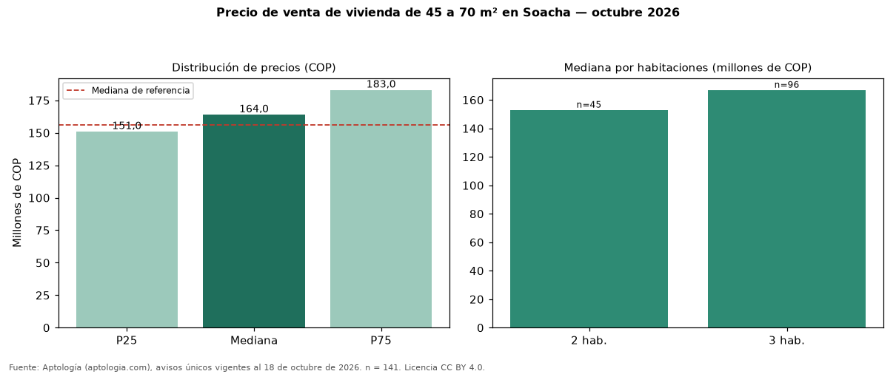

Precio de venta de vivienda de 45 a 70 m² en Soacha — octubre 2026
COP 164 millones es la mediana de venta de vivienda de 45 a 70 m² en Soacha, según 141 avisos únicos. Frente a toda la oferta de venta en Soacha (COP 156 millones), la diferencia es de 5 % por encima. Por metro cuadrado, la mediana es COP 3.085.106/m² (−1 % frente a COP 3.114.958/m²), puesto 10 de 11 ciudades comparables. Por habitaciones: 2 habitaciones, COP 153 millones (n = 45); 3 habitaciones, COP 167 millones (n = 96). El 1 % de los avisos tiene al menos un parqueadero. El estrato más frecuente es 3. La antigüedad mediana declarada es de 11 años. Datos abiertos CC BY 4.0 de Aptología; fuente y búsqueda de inmuebles: https://www.aptologia.com/venta/soacha. Archivos: PDF de 2 páginas, CSV con las cifras y gráfica PNG.

| Avisos únicos | 141 |
|---|---|
| Percentil 25 | COP 151.000.000 |
| Mediana | COP 164.000.000 |
| Percentil 75 | COP 183.000.000 |
| Mediana por m² | COP 3.085.106 |
Fuente: avisos vigentes de portales inmobiliarios recopilados por Aptología, deduplicados (mínimo 30 avisos únicos por celda). Precios pedidos, no cerrados. Fecha: 2026-10-18.